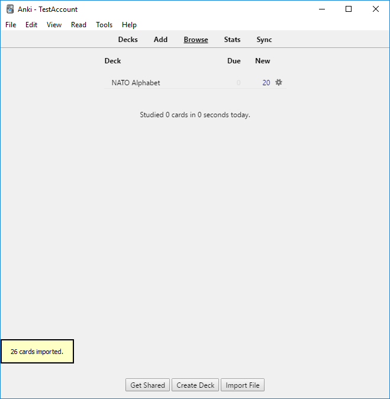
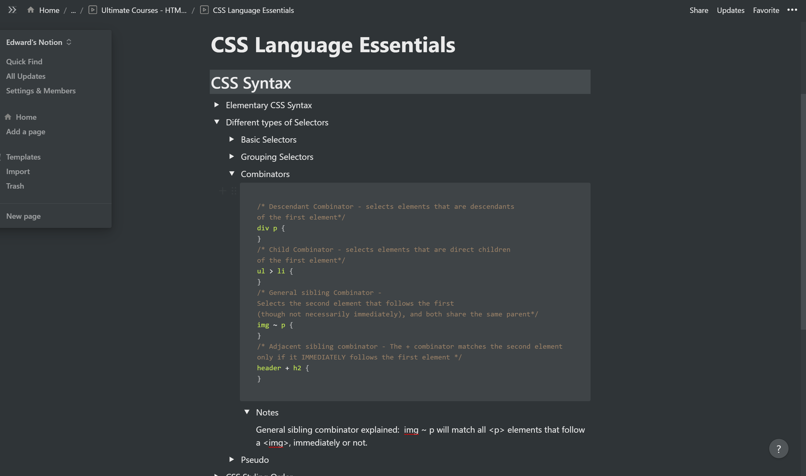
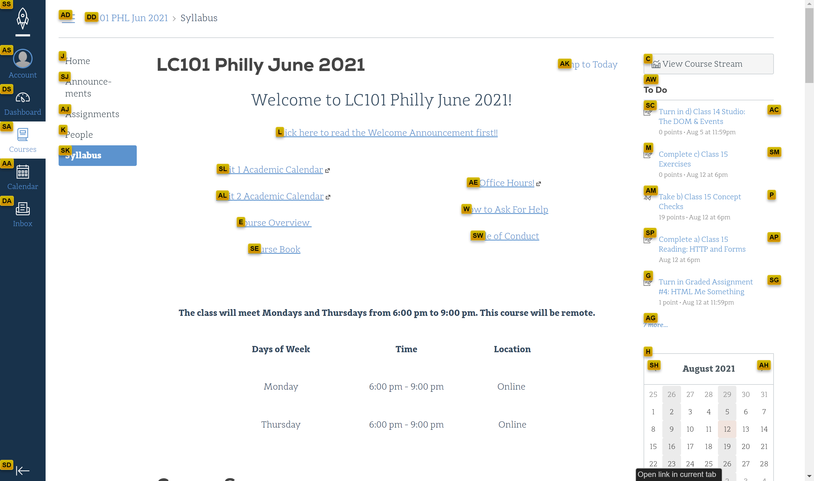
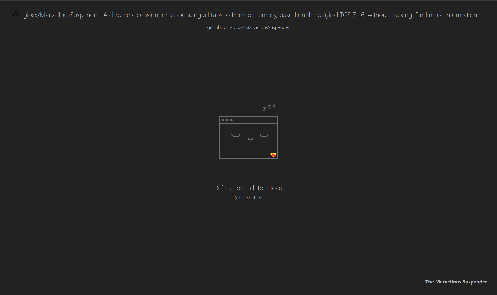

Anki
Anki is the premier spaced repetition software and I have used it for the last 5 years or so. In the software, you create flashcards that you review periodically based on how well you remember the flashcard. The software and it’s methods yield such a strong result that it’s the gold standard for medical students who must memorize thousands of facts and images. Best of all, it’s open source with plugin support and a community that creates plugins to expand its use cases.
I personally use it for a myriad of topics, but mainly as a way to not forget certain facts. For example, I have cards based on books and articles I’ve read. In my undergrad, whenever a course had a final exam, Anki was the only studying I needed. Between creating and reviewing cards, there wasn’t much dedicated cramming before finals.
Plan

Plan is a calendar/project manager that I use for all of my personal projects, etc. I mainly use Plan as a hub for all the tasks and projects I have to get done. It functions as a calendar and to-do list of sorts for me. I can write down a task and assign it to a group or project it belongs to and schedule it. It has great utility in a team environment but I haven’t had a chance to use it in that context. It’s a little rough around the edges and I wish it wasn’t but for the very basic use case I have for it, it’s perfect.
Notion.so
Notion is the successor to Plan once I have all of it's feature rich design well understood. It's an application that can almost do it all. I've used it in the past and currently as the main location of class and lecture notes. In the screenshot above, you can see that it has a great markdown editor that allows for toggled lists and code blocks. I recently began using the code blocks for this course and it has been great for building my own resource for all the minutiae that you pick up trying to center anything in CSS.
Vimium C
Vimium C is a Chrome extension that allows for the navigation of web pages from just keyboard input. It’s a fork of Vimium but rewritten in C-style code, it’s still written in TypeScript. It has VIM inspired keyboard shortcuts but I’ve found that using it doesn’t translate into using VIM well. There’s a learning curve to using the extension but I’ve found that the time saved from using it more than makes up for it. You navigate web-pages using ‘j’ and ‘k’ to scroll up and down respectively. To “click” a link you first press ‘f’ after which link hints will pop up and then you’ll be able to type those in and ‘click’ that link.
Once you get even a little proficient with it, you begin realizing how slow it is to use the mouse for interacting with anything. Switching tabs and then navigating them from the keyboard also genuinely feels cool to do but more important than the aesthetics is how efficient it feels. It’s fair to assume that we all type much faster than we can snap a cursor accurately on a pixel on screen. The mouse pointer is only hindrance once you get accustomed to this way of browsing the internet.
The Marvellous Suspender
The Marvelous Suspender is a fork of the Great Suspender add-on for Chrome. It’s an extension that replaces an inactive tab with a custom HTML page. It greatly reduces the system resources used by Chrome to maintain tabs open and active. It also has some light session management tools that I barely use. I mainly interact with the internet through laptops and reducing the use of system resources helps a lot with battery life and performance. It’s an instant install for any laptop I’ve owned since 2016 or so.
I mentioned it is a fork of another extension because that extension was sold and the new owner included what some users believed to be malware or tracking capabilities. That whole fiasco should have taught me some sort of lesson but if anything, it makes me believe a whole lot more in open source software and their communities.